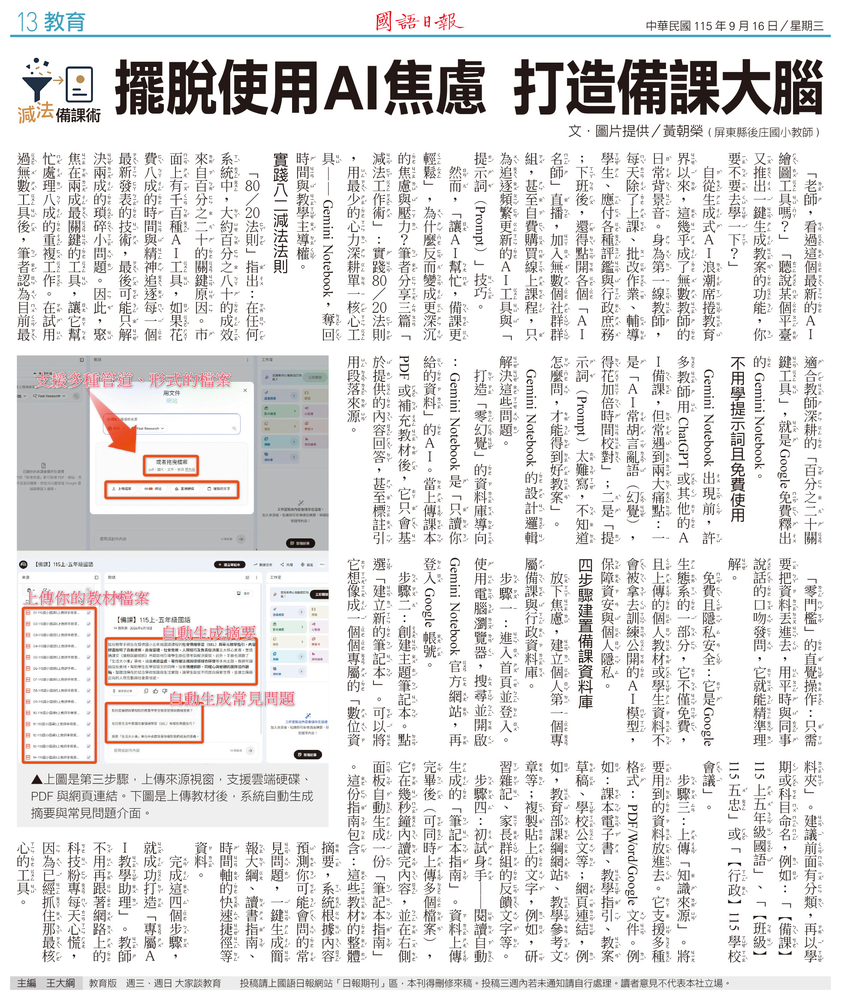
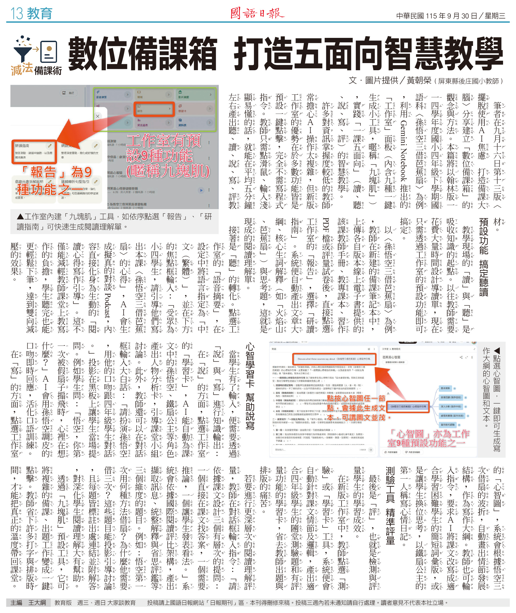
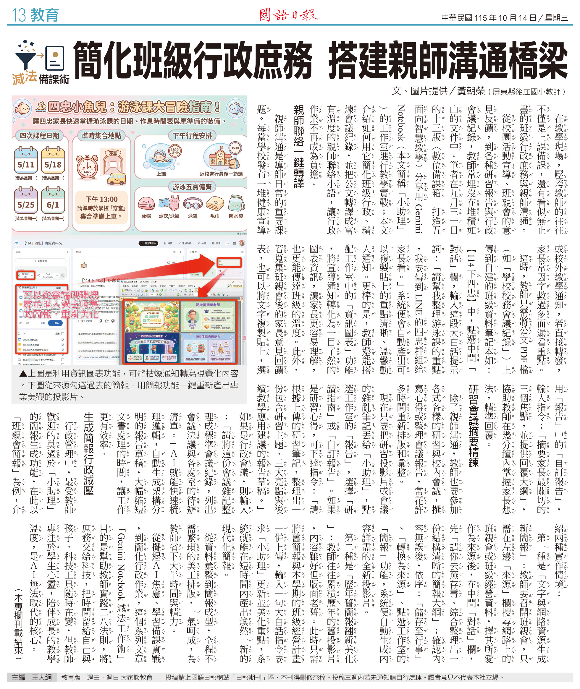

Gemini Notebook 減法工作術（全三篇）
第一篇：擺脫使用 AI 焦慮 打造備課大腦（115.09.16）
自從生成式 AI 浪潮席捲教育界以來，無數教師除了上課、批改作業、輔導學生、應付評鑑與行政庶務，下班後還得追逐頻繁更新的 AI 工具與提示詞技巧。「減法工作術」實踐 80／20 法則，用最少的心力深耕單一核心工具——Gemini Notebook（NotebookLM），奪回時間與教學主導權。
實踐八二減法法則與三大優勢
- 打造「零幻覺」的資料庫導向：只讀你給的資料，回答附帶引用段落來源標註。
- 「零門檻」的直覺操作：把資料丟進去，用平時與同事說話的口吻發問即可。
- 免費且隱私安全：Google 生態系免費使用，上傳的個人教材與學生資料不會被拿去訓練公開 AI 模型。
四步驟建置備課資料庫
- 進入首頁並登入 Google 帳號。
- 創建主題筆記本，建議加上分類前綴，例如：【備課】115上五年級國語、【班級】115五忠、【行政】115學校會議。
- 上傳知識來源（PDF、Word、Google 文件、網頁連結、複製貼上的文字）。
- 閱讀自動生成的「筆記本指南」（摘要、常見問題與學習捷徑）。

第二篇：數位備課箱 打造五面向智慧教學（115.09.30）
以翰林版國小四年級下學期國語科〈孫悟空三借芭蕉扇〉為例，利用工作室面板內含九種一鍵生成小工具（暱稱「九塊肌」），平均五分鐘即可產出「讀、聽、說、寫、評」五面向教學素材。
- 讀（報告 → 研讀指南）：自動產出文章大綱、核心生詞解釋（火焰山、芭蕉扇）與思考題，即現成閱讀理解單。
- 聽（語音摘要）：指定語言為中文（繁體），焦點框輸入「受眾為小四學生，請引導他們寫出本課〈孫悟空三借芭蕉扇〉的心得」，生成擬真對話 Podcast 作為寫作引導。
- 說（學習卡 ＋ 角色扮演）：產出人物分析卡，或在對話框輸入「請扮演孫悟空，用他的口吻跟四年級學生對話」，投影讓學生現場提問。
- 寫（心智圖 ＋ 差異化改寫）：一鍵產出情節發展心智圖作為寫作大綱，並可改寫成簡短詞彙版，或請學生以鐵扇公主第一人稱寫心情日記。
- 評（測驗 ＋ 三層次提問）：一鍵產出隨堂測驗與評量學習卡，或在對話框設計三個層次提問（直接找答案、推論、發表看法），每題皆附出處連結與解答。

第三篇：簡化班級行政庶務 搭建親師溝通橋梁（115.10.14）
善用「小助理」簡化班級行政、精煉會議紀錄，並把公文轉譯成富有溫度的親師聯絡小語，把時間留給自己與孩子。
- 親師聯絡一鍵轉譯：上傳校務會議紀錄或公文，輸入「請幫我整理游泳課的重點，我要傳到 LINE 的四忠群組給家長看」，並搭配工作室「資訊圖表」視覺化呈現；家長意見回饋表則可用「自訂報告」摘要三大焦點與回覆大綱。
- 研習會議摘要精鍊：雜亂筆記丟入工作室「報告」，一鍵生成「研習主題、三大亮點與教學應用建議」或「標準會議紀錄、決議與各處室待辦清單」。
- 生成簡報行政減壓：（1）文字與網路資源生成新簡報：整理大綱 → 儲存至記事 → 轉換為來源 → 點選工作室「簡報」；（2）歷年舊簡報翻新美化：同時上傳舊簡報與本學期計畫，一鍵更新並美化版面。
科技工具隨時在變，但教師專注於學生心靈，陪伴成長的教學溫度，是 AI 無法取代的核心。
